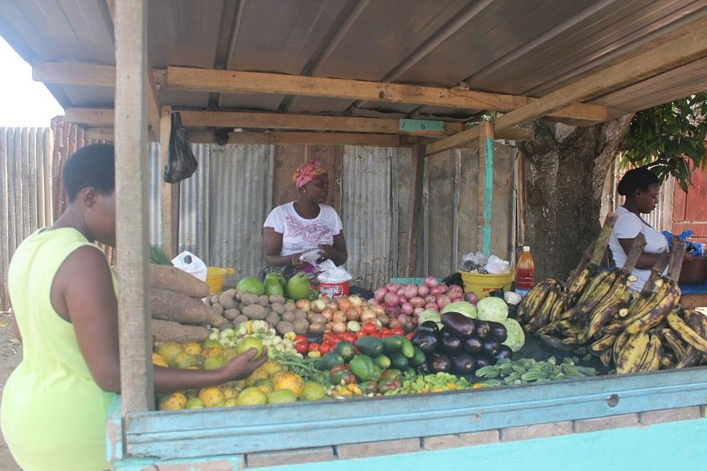
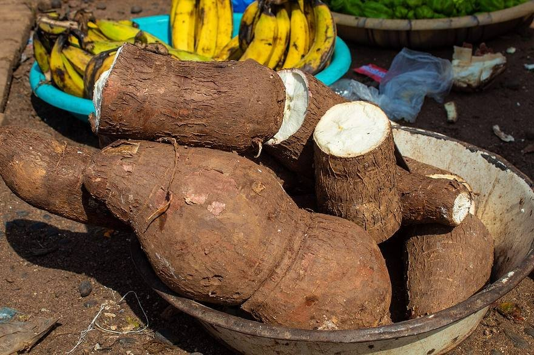
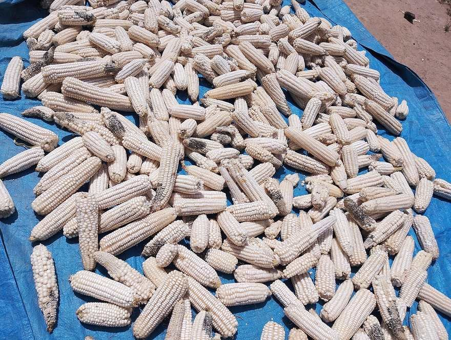
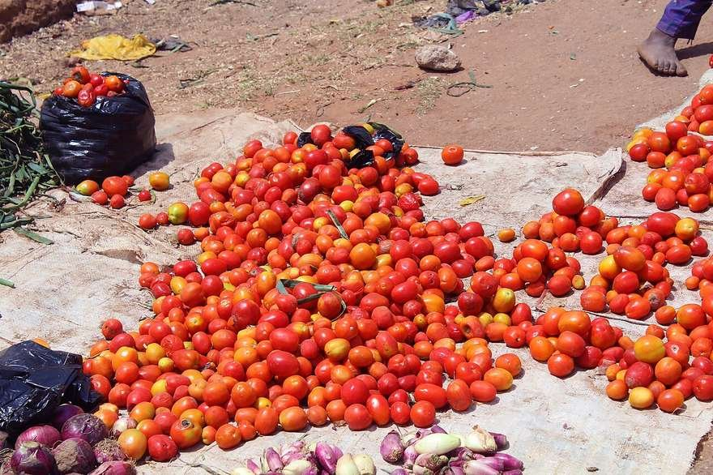
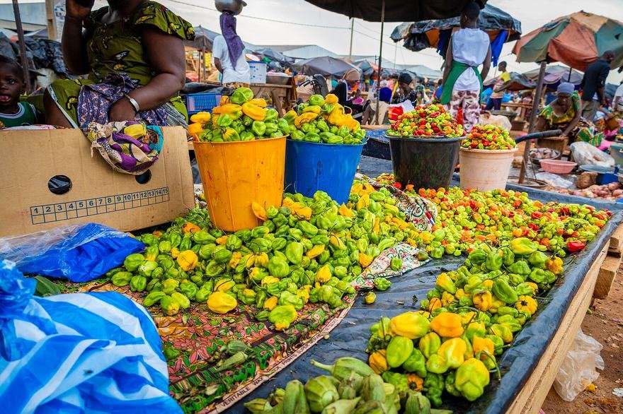
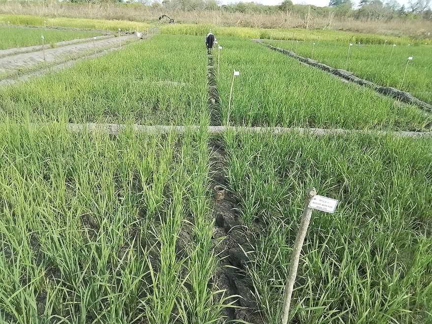

Les seize produits végétaux du panier passent de 10 020 à 10 475 F/kg : sept hausses pour sept baisses. L'intérieur recule de 0,6 %.

À Abidjan, le manioc remonte de 300 à 480 F/kg après −36,8 % en S38. L'igname assawa suit (+16,4 %, à 640 F/kg) ; le kponan cède 21,6 %.

À l'intérieur, le maïs passe de 260 à 300 F/kg, offre faible à Man et Ouangolo. À Abidjan, il recule de 4,2 % à 460 F/kg.

À l'intérieur, la tomate tombe de 875 à 760 F/kg ; −8,2 % à Abidjan (670). Mais aubergine (+29,5 %), gombo et piment flambent à Abidjan.
Féculents : forte volatilité à Abidjan. Le manioc (+60 %) efface sa baisse de la S38 quand l'igname kponan cède 21,6 % à 525 F/kg.
Offre faible : maïs à Man et Ouangolo, oléagineux à Man et Odienné, oignon violet à Cocovico et Dabou ; tension sur le blanc à Bouaflé.
Note OCPV : variations toujours divisées par la semaine en cours (manioc +38 % imprimé pour +60 %) ; colonnes intérieur titrées S37/S38.

LégumesCONTRASTÉ
DisponibilitéMOYENNENote de conjoncture
OCPV n° 39
Note n° 40 : féculents
et légumes d'Abidjan
Barème carburants
d'octobre
Nouvelles récoltes
mises en marché